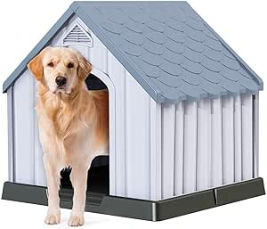

Meus projetos
Monitoramento Inteligente de Rotas de Ônibus
Desenvolvi uma aplicação web interativa para simular o monitoramento de rotas de ônibus em tempo real. Permite visualizar ônibus no mapa e simular previsões de chegada. Uma ferramenta útil para otimizar o planejamento de viagens.

Sistema de Gerenciamento para Abrigos de Animais
Criei um sistema de gerenciamento simples para abrigos de animais, permitindo o cadastro de animais, acompanhamento do status de adoção e a visualização de informações importantes. Um projeto com impacto social positivo.
Sistema de Controle de Vacinação
Desenvolvi um sistema intuitivo para o registro e controle de vacinas, ideal para gerenciamento de campanhas ou carteiras de vacinação individuais. Permite cadastro, consulta e atualização de dados de imunização.